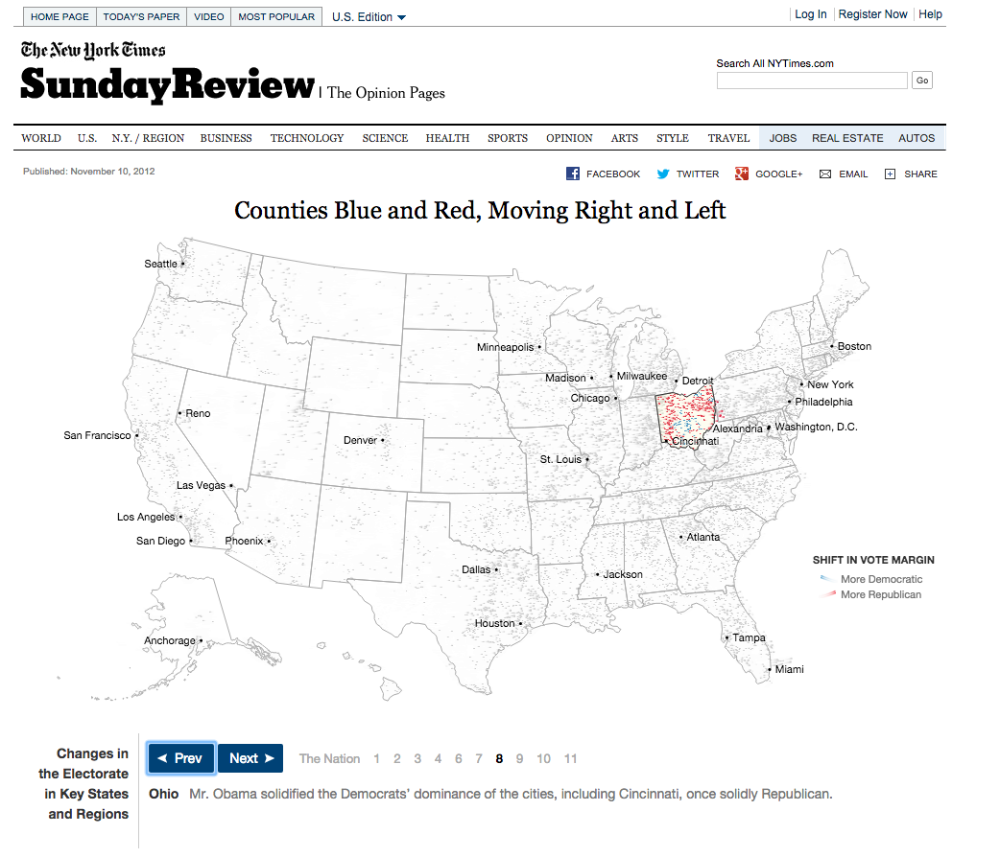
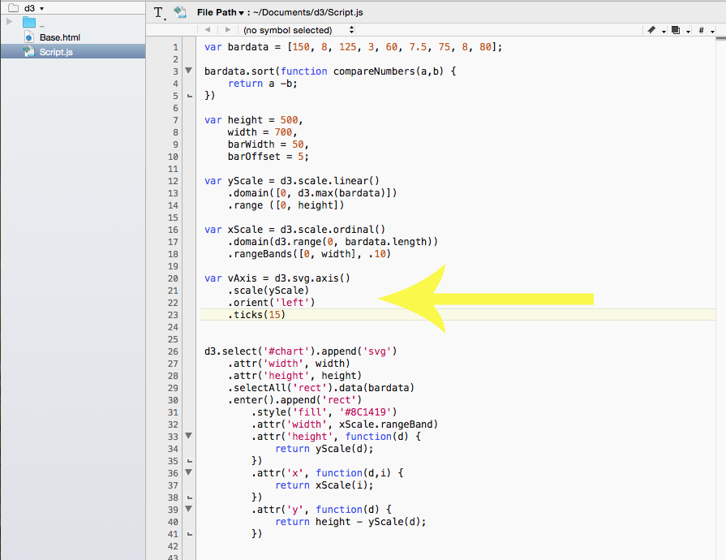
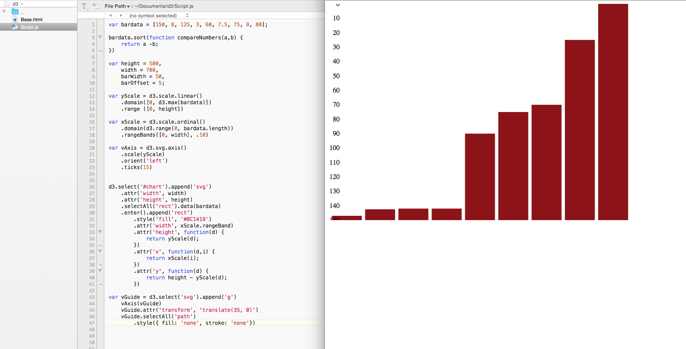

D3 is a framework that is also a visualization JavaScript library for building data driven graphics. It lets you build graphics that use common web standards. You use Javascript, html, css and svg to create scalable vector graphics.
D3.js allows great control over the final product from the colors to the size. It allows the user to create dynamic and interactive graphics in web browsers.
D3.js has its own style of selections that resembles CSS to select a given Document Object Model. After selecting you can manipulate the DOM nodes.
To create a D3 graphic you need to download the library from D3.js.There is a link on the website to download the library.
Once you have downloaded the library you will have a folder like this:
In order to make Leaflet work, one needs an html document and a JavaScript document. There can also be a CSS file. Some people only use a html file but it makes it cleaner and easier to use a Javascript file.
In the html file you need to link to the script to the D3.js JavaScript file. The files can be worked on in any text editing program that the coder feels comfortable with, such as TextWrangler.
The limitations I found with D3 is knowning everything you can do and what everything does. Sometimes the way to learn how to do things with D3 is looking at other people's code and if you don't understand what their variable name does or anything else it can easily get confusing. Other limitation for D3 is that it doesn't work on older browsers. Another limitation is with data sources. If you are not coding on a server then it won't connect to you data file.
Different organizations have used D3.js to create graphics for the web. The New York Times has made quite a few graphics with D3.
The above graphics were created by the New York Times with D3. The first graphic is about Counties trends of moving towards republican or democrat. The lines move to show that trends of peoples votes are moving. The creator used the d3 to create the map and the moveable lines. It was probably created by using the code for a animated wind chart. The tool did a good job with the data because it represents the data better than a static map. The point of the data was the shifting of votes so the animation of the dots shifting helps emphasize that.
The second graphic is about the times of Olympic swimmers over the years. The graphic looks a scatterplot. The tool was effective in representing the data because the each point represents an athlete and you can see the trend of athletes getting faster over time. The tool allowed them to set each point on the plot and change the color of the dots to represent what medal they got.
To start making a D3 graphic you need to start a normal html document. Then link the d3 library to the html document with the script selection. I linked to the min.js file but there isn't a difference than the d3.js file when it comes to your final product. I also created a container and a div with an id of chart to put the graphic in later. |
|
I start a JavaScript file and put in the data for my chart. Some people link to files for their data but when working with a file not on a server they tend not to show up. |
|
I created a variable to state what the size of the graphic would be. Making a variable for the height and width makes it so you don't have to keep typing in the numbers each time you need them. |
|
I use the d3 select to start making the graphic. I put in the width and height and put a background color so we can see the changes. The append creates a new div with the name of what you tell it so in this case it makes a new group with the name of svg. |
|
To start making the bar chart in d3 you select the rectangle, which we haven't made yet and then tell it to grab the data |
|
Then we actually make the rectangle group that we called to earlier. |
|
I add in some styling, which is easy to do in d3. I changed the color, width and height. You can see in the image next to the code that the bars are all laying on top of each other and are at the top. |
|
I create function to separate the bars. By adding together the barWidth with the barOffset the bars separate. |
|
Then we create a function to bring the bars down to the bottom of the graph. The function subtracts the height from the data. |
|
I want the bars to fill the height and width I set earlier. So I want to scale the bars. I make a variable called yScale and fill in the needed data, such as d3.max(bardata) that makes the maximum data go to the maximum height. |
|
Then we do something similar with the width. With both we create separate variables that we call to later in the code. |
|
I want my data to go from smallest to largest. To do that I use a function to sort the numbers. |
|
Now I want to separate the bars so they are not directly next to each other. In my xScale variable I use the rangeBands to separate the bars. The .20 is the amount the bars are separated from each other. |
|
|  | I wanted to put a axis on the left side to be able to visually understand the amount of data per bar. To do this I created a variable called vAxis. I told it how many ticks I wanted. The top number was 150 so I told it to make 15 ticks so they would be 10 apart. |
I created a variable called vGuide which is where the styling for the axis would go. |
|
|  | Here is the different styling i was using. I changed the stroke and fill to look the way I wanted. |
I added lines to be ticks on the axis and also styled those. |
|
I changed the axis to be opposite like I did earlier with the bars and then went to work on the margins so the axis wouldn't be on top of the graphic. I created a variable called margin where I put in the numbers I wanted.I then need to change the width and height so they don't have the margins. |
|
I want the graphic to have the margins though so in the chart area I add back in the margins to the height and width. |
|
With the margins in the axis is still laying on top of the graphics so we need to move the graphic to the right. We do that by transforming it and telling it how much we want to move it top, right, bottom and right. |
|
I want the graphic to have some interactivity so I need to create some mouse overs and mouseouts. On the mouseover I want the bar to go down in opacity so you can see which one you are on. I need to create a mouseout so the bar goes back to its original opacity. |
|
I then create a variable called tooltip so that I can have a box that shows the data when you have the mouse over the bar. I give it some styling such as a background and opacity. I also make it absolute so it will move around the page. |
|
Then I add the tooltip to the mouseover so it shows up with the mouseover. |
There are a lot of resources for D3, especially of GitHub where people post their projects.
Justin Palmer goes over how to create tooltips and how to style them on his Block. Palmer used a data file so there were parts of his data that I couldn't replicate but I was able to follow how he created his tooltip, which I used on my bar chart.Link
Here is a bar chart someone put on GitHub. The person put all of their code on there so it was easy to follow what they did to make their bar chart. Link
D3 has its own resource that makes it easy to find selections that you need or are confused about. It can be hard to find certain things if you don't have the right wording though.Link